前言
这些几何题目都是我和小可爱 CE 一起做的, 都有启发性, 质量应该比较高.
感谢：
- 教过我几何的老师, wk & jkl & rzn
- 我的南梁朋友, 小可爱 CE
- 我的 npy, 她的几何很好, 小可爱 jjz
- 我的女神, 声音很好听的 wjc
- 敲可爱的小南梁兼几何大神, cyt
如果你不知道前 $4$ 个是谁, 那么我也不会告诉你, 但是如果你不知道 cyt 是谁, 那么:
目录与评价
- 1: 好题
- 2: 熟知题
- 3: 好题
- 4: 好题
- 5: 熟知题/坑题
- 6: 好题/熟知题
- 7: 熟知题
- 8: 模型题/好题
- 9: 简单题
- 10: 好题
- 11: 唐题
- 12: 计算题/好题
- 13: 计算题/简单题
- 14: 好题
- 15: 熟知题/模版题
话不多说, 我们开始吧! UwU
Geometry 1

Problem:
$△ABC$ 中, $H$ 为垂心, $D, E$ 在 $AC, AB$ 上, 满足 $DH⊥HC, EH⊥HB$, 过 $C$ 做 $BC$ 的垂线交直线 $DE$ 于 $F$.
证明: $HF=FC$.
Solution:

由 $DH⊥HC, HC⊥AB$ 知 $DH//AB$, 同理 $EH//AC$, 所以 $AEHD$ 是平行四边形.
由 $AH⊥FC, FC⊥BC$ 知 $AH//FC$.
令 $M$ 为 $AH$ 中点, HD 交 FC 于 G.
那么因为 $△AHD∽△CGD$, 且 $∠ADM=∠CDF$, 所以 $M, F$ 为两个相似三角形的相似对应点.
所以 $GF=FC$. 又 $∠GHC=\frac{\pi}{2}$, 所以 $FH=GF=FC$.
证毕.
Geometry 2

Problem:
$△ABC$ 的内切圆圆 $I$ 交三边于 $D, E, F$. 令 $BI$ 交 $EF$ 于 $G$, $CI$ 交 $EF$ 于 $H$.
证明:
(1): $BG⊥GC, BH⊥HC$, 且 $BHGC, BHFID, CGEID$ 均共圆.
(2): $S_{AHIG}=S_{BIC}$.
Solution:

- (1): 证明: $BG⊥GC, BH⊥HC$, 且 $BHGC, BHFID, CGEID$ 均共圆.
事实上, 本结论是 Sawayama’s Lemma (沢山引理) 的特例, 即当大圆无穷大的情况. 详见第 $8$ 题.
由 $B$ 向 $IC$ 做垂线交 $IC$ 于 $H’$, $C$ 向 $IB$ 做垂线交 $IB$ 于 $G’$.
则 $BG’⊥G’C, BH’⊥H’C$, 且 $BH’G’C, BH’FID, CG’EID$ 均共圆.
下证 $G’=G, H’=H$.
由 $∠H’IB=∠H’FB=∠AFE=\frac{π-∠A}{2}=π-\frac{π+∠A}{2}=π-∠BIC$ 知 $H’, I, C$ 共线.
同理, $G’, I, B$ 共线. 所以, $G’=G, H’=H$.
证毕.
- (2): 证明: $S_{AHIG}=S_{BIC}$.
令 $M$ 为 $EF$ 中点, 则 $IM \times IA=IF^2=IE^2=ID^2$.
$S_{AHIG}=\frac{1}{2} AI \times HG=\frac{1}{2} \times \frac{ID^2}{IM} \times HG = \frac{1}{2} ID \times (HG \times \frac{ID}{IM}) = \frac{1}{2} ID \times BC = S_{BIC}$.
证毕.
Geometry 3

Problem:
$△ABC$ 中, 内接圆圆 $I$ 切三边于 $D, E, F$. 令 $K, L, M, N$ 分别为 $BF, CE, BD, CD$ 的中点, 且直线 $KM$ 与 $LN$ 交于点 $P$.
证明: $△BCP$ 的外接圆与圆 $I$ 相切.
Solution:
由 $BK^2=KF^2, BM^2=MD^2$ 知 $KM$ 为点圆 $B$ 和圆 $I$ 的根轴,
同理, $LN$ 为点圆 $C$ 和圆 $I$ 的根轴.
所以, $P$ 为点圆 $B$, 点圆 $C$, 圆 $I$ 的根心.
所以, $P$ 对圆 $I$ 的幂恰好等于 $PB^2=PC^2$.
以 $P$ 为反演点, $PB^2$ 为幂进行反演. 则因为反演幂也是 $P$ 对圆 $I$ 的幂, 所以圆 $I$ 自反.
又 $△BCP$ 的外接圆反演为 $BC$, 且 $BC$ 与圆 $I$ 相切, 所以 $△BCP$ 的外接圆的像与圆 $I$ 的像相切,
所以 $△BCP$ 的外接圆与圆 $I$ 相切.
证毕.
Geometry 4

Problem:
$△ABC$ 的外接圆为圆 $O$, 垂心为 $H$, $BE$ 与 $CF$ 为两条高. 令 $AH$ 交圆 $O$ 于 $D$, 且 $AH$ 的中点为 $M$, $EM$ 交 $BD$ 于 $X$, $FM$ 交 $CD$ 于 $Y$.
证明: $OH ⊥ XY$.
Solution:
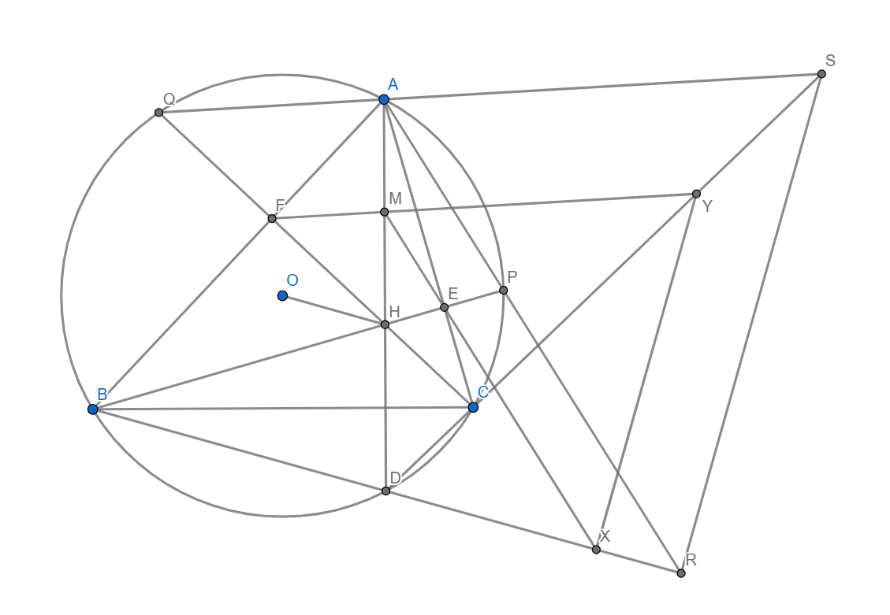
令 $BH, CH$ 分别交圆 $O$ 于 $P, Q$, $PA$ 交 $BD$ 于 $R$, $QA$ 交 $CD$ 于 $S$.
则因为 $QF=FH, AM=MH, PE=EH$, 所以 $AS//MY, AR//MX$,
所以 $\frac{DR}{DX}=\frac{DA}{DM}=\frac{DS}{DY}$, 所以 $RS//XY$.
对四边形 $QACD$ 用 Brocard’s Theorem (布洛卡定理), 得 $S$ 在 $H$ 的极线上. 同理, $R$ 在 $H$ 的极线上.
所以 $H$ 的极线是 $SR$, 所以 $OH ⊥ RS$. 又 $RS//XY$, 所以 $OH ⊥ XY$.
证毕.
Geometry 5

Problem:
$△ABC$ 中, $I$ 为内心, 圆 $O$ 为外接圆. 令 $AI$ 交圆 $O$ 于 $S$, $AH$ 为高, $HS$ 交圆 $O$ 于 $D$, 交 $AB$ 于 $F$. 令 $CD$ 交 $AI$ 于 $G$.
证明: $FG//BC$.
Solution:
事实上, $AH$ 为高是一个无用条件. 有时候, 出题人加上一个无用条件, 使得你无法从点的运动的方式去思考问题, 难度因此大增. 这时候, 你需要精准地判断出这个无用条件.
对 $ABCDSS$ 用 Pascal’s Theorem (帕斯卡定理), 得 $F$, $G$, $BC$ 与 $SS$ 的交点, 三点共线.
因此, $FG, BC, SS$ 三线共点, 而 $BC//SS$, 因此此点为无穷远点, 所以 $FG//BC$.
证毕.
Geometry 6

Problem:
$ABDC$ 为圆 $O$ 的内接四边形, $AD$ 交 $BC$ 于 $E$, $AC$ 交 $BD$ 于 $F$, 点 $G$ 满足 $CEDG$ 为平行四边形.
证明: $∠CFG=∠DFE$.
Solution:
你实在不会你也可以导正弦比. 但是这里说一种好的证法.
显然 $△FAB∽△FDC$, 且 $△ABE∽△CDE∽△DCG$,
所以 $FABE ∽ FDCG$, 所以 $△FCG∽△FBE$, 所以 $∠CFG=∠DFE$.
证毕.
Geometry 7

Problem:
$△ABC$ 的外接圆为圆 $O$, 其内切圆圆 $I$ 切三边于 $D, E, F$. 令 $H$ 为 $△DEF$ 的垂心.
证明: $H, I, O$ 共线.
Solution:
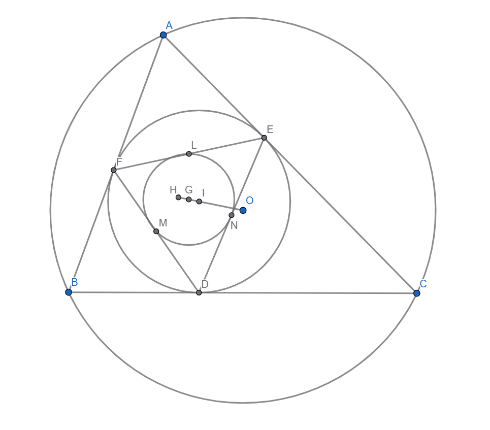
目前绝大多数的 MOer 不知道此”熟知”的结论. 而在小部分知道此结论的人里, 绝大多数人用的都是极复杂的证明方法.
所以, 这里提供一个无脑证法.
令 $L, M, N$ 分别为 $EF, DF, DE$ 的中点. 对圆 $I$ 反演, 则 $A$ 的像为$L$, $B$ 的像为 $M$, $C$ 的像为 $N$.
所以, 圆 $O$ 的像为 $△LMN$ 的外接圆, 即 $△DEF$ 的九点圆. 令 $G$ 为 $△DEF$ 的九点圆圆心.
如图, 由反演的性质, 显然 $G, I, O$ 三点共线.
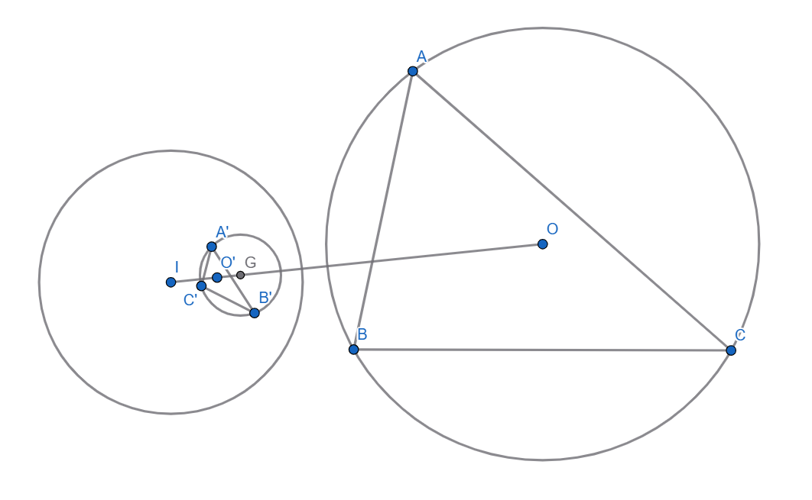
(反演虽然不保圆心 ($O’ \neq G$), 但是由对称性, 反演原点 $I$, 原来的圆的圆心 $O$, 和反演后的圆的圆心 $G$ 一定还是共线的.)
而因为 $G$ 是 $△DEF$ 的九点圆圆心, $I$ 是 $△DEF$ 的外接圆圆心, $H$ 是 $△DEF$ 的垂心,
所以 $G, I, H$ 共线 (而且 $G$ 为 $HI$ 中点).
因为 $G, I, O$ 共线, 且 $G, I, H$ 共线, 所以 $H, I, O$ 共线.
证毕.
Geometry 8

Problem:
$△ABC$ 的外接圆为圆 $O$, $I$ 为内心，$△ABC$ 的内接圆切 $BC$ 于 $D$. 点 $P$ 在 $BC$ 上. 圆 $O_1$ 和圆 $O_2$ 均与线段 $BC$, 线段 $AP$, 和圆 $O$ 相切, 且 $O_1 \neq O_2$.
令圆 $O_1, O_2$ 分别切圆 $O$ 于切点 $F, G$, 切线段 $BC$ 于 $D1, D2$, 切线段 $AP$ 于 $J, H$.
证明:
(1): Sawayama’s Lemma (沢山引理), $D_1, I, J$ 共线, $D_2, H, I$ 共线.
(2): Thebault’s Theorem (泰博定理), $O_1, I, O_2$ 共线.
(3): $FG, O_1O_2, BC$ 共点.
(4): $F, G, D_1, D_2$ 共圆.
(5): $F, G, D, P$ 共圆.
Solution:
这道题给两圆相切的问题提供了新的思路.
当你看到两圆相切, 且其中一个由另一个生成, 且无法反演时, 可以考虑使用以上结论.
- (1): 证明: Sawayama’s Lemma (沢山引理), $D_1, I, J$ 共线, $D_2, H, I$ 共线.
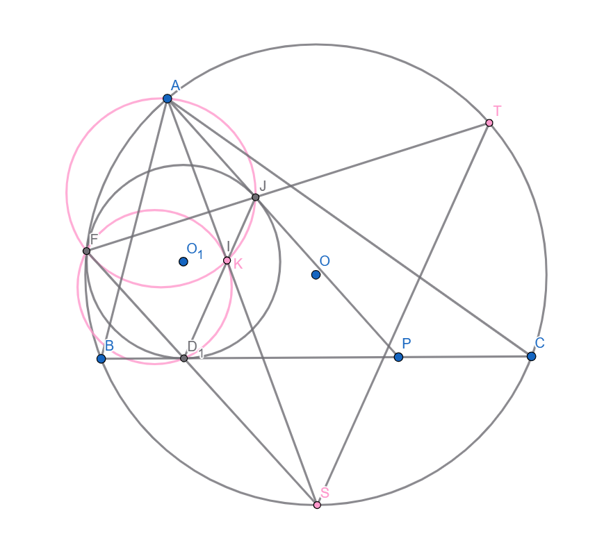
令 $AI$ 交圆 $O$ 于 $S$, $FJ$ 交圆 $O$ 于 $T$, 则因为 $SS // BC$, 所以由位似对应知 $F, D_1, S$ 共线.
又因为 $J, T$ 位似对应, 所以 $JD_1 // TS$. 令 $JD_1$ 交 $AS$ 于 $K$, 则 $KJ // TS$. 下证 $I=K$.
由 Reim’s Theorem (雷姆定理) 知 $AFKJ$ 共圆 (或因为 $∠FJK=∠FTS=∠FAS=FAK$ 即得).
所以 $∠SKD_1=∠AKJ=∠AFJ=∠AFK-∠JFK$
$=∠KJP-∠JFK=∠D_1JP-∠JFK=∠D_1FJ-∠JFK=D_1FK$,
所以 $△D_1FK$ 的外接圆与 $AS$ 切于 $K$, 因此 $SK^2=SD_1 \times SF$.
而 $∠SFB=\frac{∠A}{2}=∠SBD_1$, 所以 $△SBD_1∽△SFB$, 所以 $SD_1 \times SF=SB^2$.
所以 $SK^2=SB^2$, 得 $SK=SB$, 由鸡爪定理, 所以 $SK=SI$, 所以 $K=I$, 即有 $D_1, I, J$ 共线.
证毕.
- (2): 证明: Thebault’s Theorem (泰博定理), $O_1, I, O_2$ 共线.
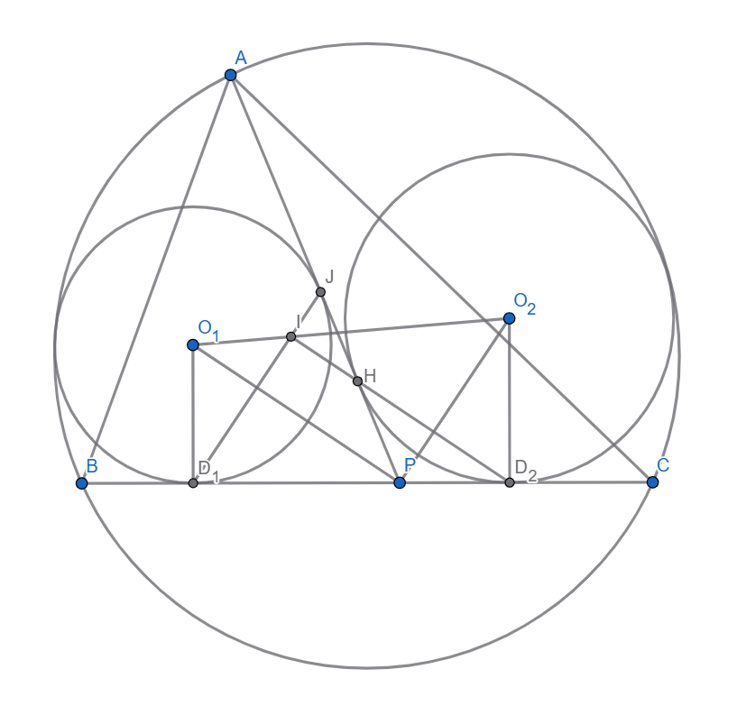
由 Sawayama’s Lemma (沢山引理, 即 (1) 问), $D_1, I, J$ 共线, $D_2, H, I$ 共线.
因为 $∠O_1PO_2=∠O_1PA+∠O_2PA=\frac{1}{2} (∠BPA+∠CPA)=\frac{\pi}{2}$, 所以 $O_1P ⊥ O_2P$.
又因为 $PD_1=PJ$, 所以 $D_1J ⊥ O_1P$, 所以 $D_1J // O_2P$, 所以 $D_1I // O_2P$. 同理, $D_2I // O_1P$.
我们现在把 $I$ 的位置确定下来了, 于是可以继续简化图形.
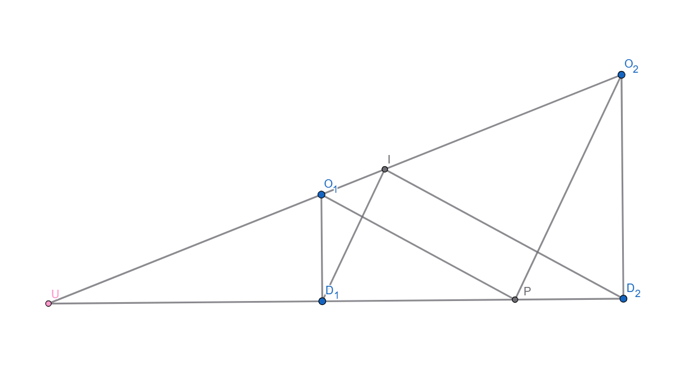
问题事实上变成了这样:
已知 $O_1D_1D_2O_2$ 是直角梯形, 点 $P$ 在直角边 $D_1D_2$ 上. (事实上, $O_1P ⊥ O_2P$, 但是对结论没有帮助).
过 $D_1$ 做 $PO_2$ 的平行线交 $O_1O_2$ 于 $I$. 证明: $D_2I // PO_1$.
这样就简单多了. 我们令 $O_1O_2$ 交 $D_1D_2$ 于 $U$,
则 $\frac{UI}{UO_1}=\frac{UI}{UO_2} \times \frac{UO_2}{UO_1}=\frac{UD_1}{UP} \times \frac{UD_2}{UD_1}=\frac{UD_2}{UP}$,
所以 $D_2I // PO_1$.
证毕.
- (3): 证明: $FG, O_1O_2, BC$ 共点.
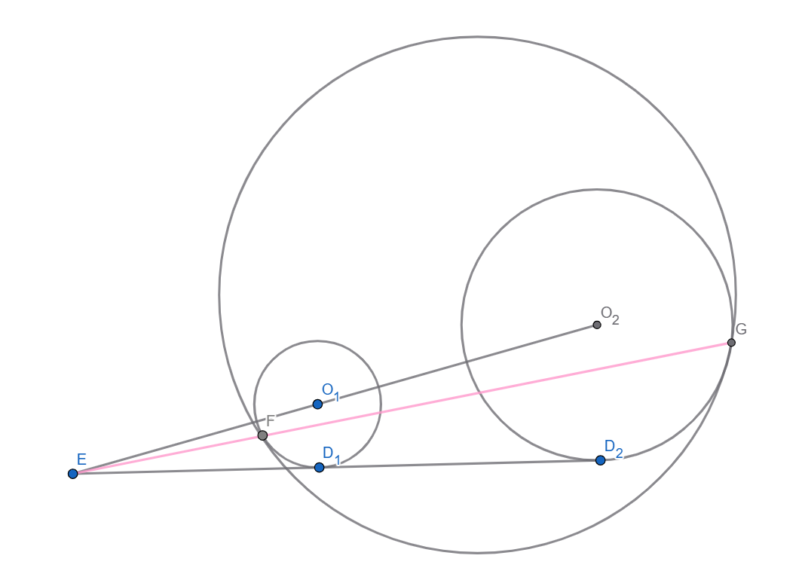
注意: 以下使用的蒙日定理是指三圆两两外位似中心共线的结论而非根心定理, 有人也称它为外位似中心原理.
很久之前, 一群 MOer 把蒙日定理和根心定理搞混了, 然后不停地误导人, 导致现在很多人都被误导了.
(不信? 事实上, 在 Google 上查询 Monge’s Theorem, 没有一条是关于根心定理的.)
显然圆 $O$ 与圆 $O_1$ 的外位似中心为 $F$, 圆 $O$ 与圆 $O_2$ 的外位似中心为 $G$.
令 $O_1O_2$ 交 $BC$ 于 $E$, 则 $E$ 显然是圆 $O_1$ 与圆 $O_2$ 的外位似中心.
对圆 $O_1$, 圆 $O_2$, 圆 $O$ 用 Monge’s Theorem (蒙日定理), 即得 $E, F, G$ 共线.
证毕.
- (4): 证明: $F, G, D_1, D_2$ 共圆.
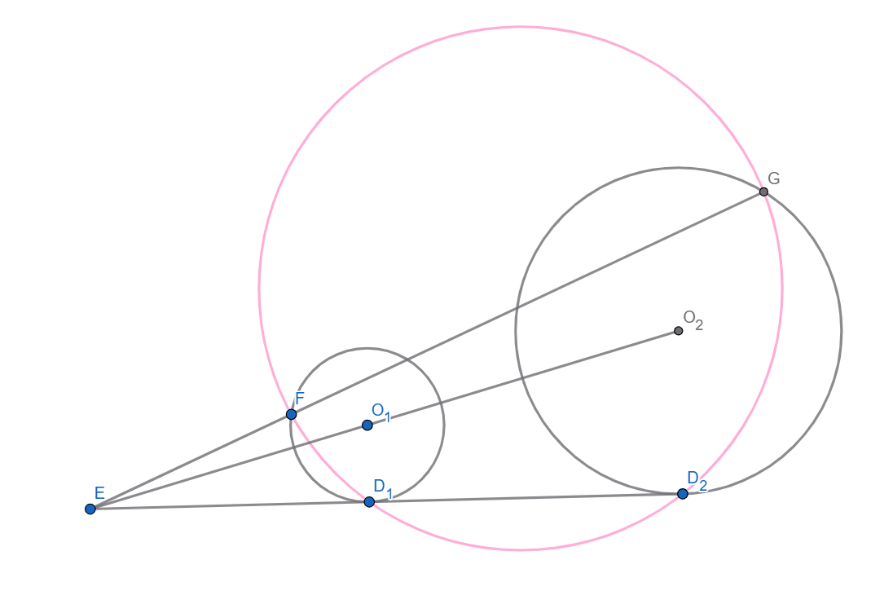
这个结论应该人尽皆知吧, 实际上和本题没有太大的关系, 而是给第 (5) 问做铺垫的.
以 $E$ 为反演点, $ED_1 \times ED_2$ 为幂进行反演, 则圆 $O_1$, 圆 $O_2$ 互反.
所以 $F, G$ 互反, 所以 $ED_1 \times ED_2 = EF \times EG$, 所以 $F, G, D_1, D_2$ 共圆.
证毕.
- (5): 证明: $F, G, D, P$ 共圆.
由 (4) 知, $F, G, D_1, D_2$ 共圆, 所以 $EF \times EG = ED_1 \times ED_2$.
所以我们只需要证明 $ED_1 \times ED_2 = ED \times EP$.
由 $O_1P ⊥ O_2P, O_2P ⊥ ID_2$ 知 $O_1P // ID_2$.
所以 $\frac{ED_1}{ED}=\frac{EO_1}{EI}=\frac{EP}{ED_2}$,
所以 $ED_1 \times ED_2 = ED \times EP$.
证毕.
Geometry 9

Problem:
$O$ 是 $△ABC$ 的外心, 点 $P$ 在 $∠BAC$ 的平分线上. 令 $O_1, O_2, O_3$ 分别是 $△BPC, △APC, △APB$ 的外心.
证明: $OK//AP$.
Solution:
简单题休息一下, 让脑子缓缓.
因为 $O_2A=O_2P, O_3A=O_3P$, 所以 $O_2O_3 ⊥ AP$. 因此只需证明 $OK ⊥ O_2O_3$.
而 $K$ 在 $O_2O_3$ 的中垂线上, 所以只需证明 $O$ 也在 $O_2O_3$ 的中垂线上, 即 $∠OO_2O_3=∠OO_3O_2$.
而因为 $O_3O ⊥ AB, O_3O_2 ⊥ AP$, 所以 $∠OO_3O_2=∠BAP$, 同理 $∠OO_2O_3=∠CAP$.
因为 $∠BAP=∠CAP$, 所以 $∠OO_2O_3=∠OO_3O_2$.
证毕.
Geometry 10

Problem:
$△ABC$ 中, $O$ 是外心, $∠BAC$ 的平分线与 $BC$ 交于 $D$, $E$ 与 $D$ 关于 $BC$ 的中点对称. 过 $D, E$ 做垂直于 $BC$ 的直线, 分别与直线 $AO, AD$ 交于 $X, Y$.
求证: $B, X, C, Y$ 共圆.
Solution:
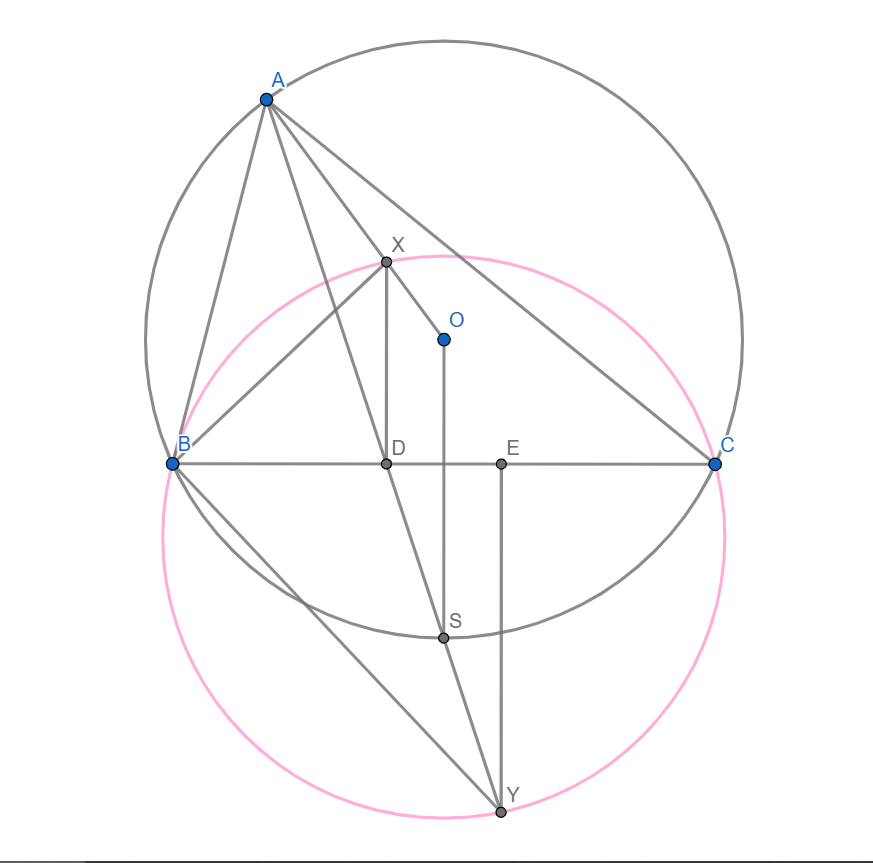
我们证明 $∠XBY=∠XCY=\frac{\pi}{2}$. 这只需要证明 $△XBD∽△BYE$.
这只需要证明 $\frac{XD}{BD}=\frac{BE}{EY}$, 即 $XD \times EY=BD \times BE$.
令 $AD$ 交圆 $O$ 于 $S$, 则 $DS=ES=YS$. 由 $AO=OS, XD//OS$ 知 $AX=XD$.
$BD \times BE=BD \times DC=AD \times DS$. 所以原式只需要证明 $XD \times EY=AD \times DS$,
即 $XD \times EY=AD \times ES$, 即 $\frac{XD}{AD}=\frac{ES}{EY}$, 即 $△AXD∽△ESY$.
但这两个三角形都是等腰三角形, 且 $∠XDA=\frac{\pi}{2}-∠YDE=∠SYE$, 所以 $△AXD∽ESY$.
证毕.
Geometry 11

Problem:
任意四边形 $ABCD$ 中, 令 $E$ 为 $AD$ 与 $BC$ 的交点, $F$ 为 $AB$ 与 $CD$ 的交点, $G$ 为 $AC$ 与 $BD$ 的交点.
令 $H, I, J, K$ 分别为 $FG$ 与 $AD$ 的交点, $EG$ 与 $AB$ 的交点, $FG$ 与 $BC$ 的交点, $EG$ 与 $CD$ 的交点.
证明: $HK, IJ, EF$ 共点.
Solution:
纯唐题, 选自小南梁 cyt 的几何书的一个很唐的一章.
注意到构图方式只有圆/直线的交点, 所以是纯射影问题, 考虑射影变换.
射影变换就是一种几何变换, 保圆, 保直线, 其他什么都不保证. 注意射影变换不是仿射变换(不一定是), 坑了我好几天.
熟知存在一个射影变换使得给定四点, 他们变成令外给定的四点(此结论的证明由于需要使用高等数学, 故这里不给出).
于是我们可以进行一个射影变换, 使得 $A, B, C, D$ 变成正方形.
那么, 我们只需要证明在这个情况下, 原命题成立, 那么把他变换回去, 原命题仍然成立.
以下可能比较抽象, 如果你理解不了, 可能是你不够抽象.
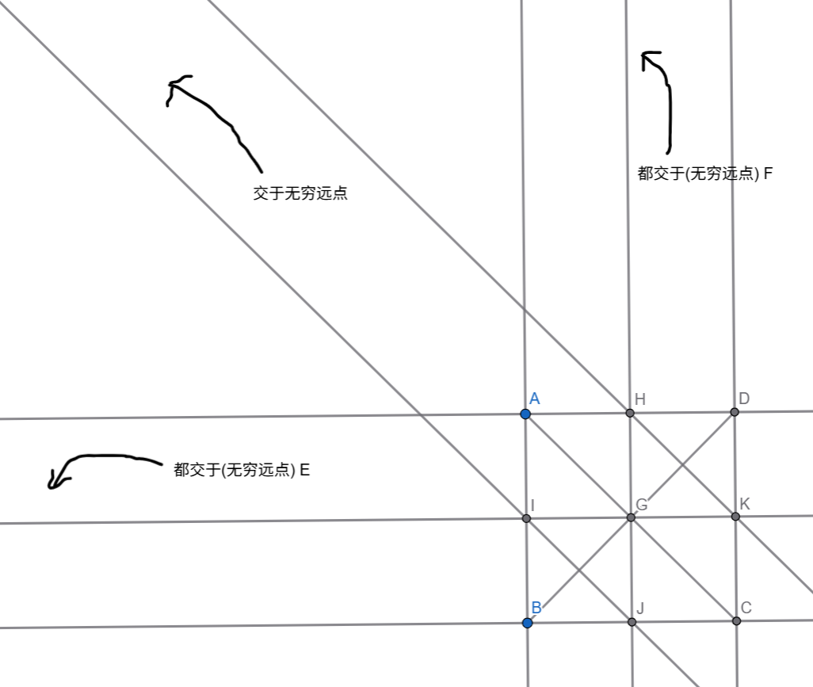
变换后, $E, F$ 变成了无穷远点.
那么因为 $EIGK$ 共线, 所以 $IGK$ 只能平行于 $AD$ 和 $BC$, 所以 $I, K$ 是 $AB$ 与 $CD$ 的中点.
同理, $H, J$ 是 $AD$ 与 $BC$ 的中点.
所以, 因为 $IJ$ 与 $HK$ 平行, 所以 $IJ 与 HK$ 交于另一个无穷远点, 令其为 $X$.
由无穷远点的显然性质, $E, X, F$ 三个无穷远点一定共线.
证毕.
Geometry 12

Problem:
在 $△ABC$ 中, $O$ 为形内任意一点, $AO, BO, CO$ 交 $BC, AC, AB$ 于 $D, E, F$.
$T$ 为线段 $AO$ 上任意一点, $△DOF, △DOE, △DTF, △DTE$ 的外接圆交 $BC$ 于 $P, Q, R, S$.
证明: $PR=QS$.
Solution:
你发现所有的圆都经过 $D$, 于是你选择了反演, 然后没做出来. 为什么呢, 因为本来 $E, F$ 好好的, 你把它们变成了两个圆的交点.
不是说反演不能做, 但是不好.
不过, 所有的圆都经过 $D$ 也有另一个好处, 就是可以运用三弦定理, 所有东西都可以用和 $D$ 有关的长度表示.
然后你发现肯定是可算的, 而且很简单, 这样心里有底了. 由三弦定理:
$DP \sin ∠FDO + DO \sin ∠FDP = DF \sin ∠PDO$,
$DR \sin ∠FDT + DT \sin ∠FDR = DF \sin ∠RDT$.
由 $∠FDO=∠FDT=∠FDA, ∠FDP=∠FDR=∠FDB, ∠PDO=∠RDT$, 所以, 两式相减, 得:
$PR \sin FDO - OT \sin ∠FDB = 0$,
所以, $PR = OT \times \frac{\sin ∠FDB}{\sin ∠FDA}$,
同理, $ST = OT \times \frac{\sin EDC}{\sin EDO}$.
而 $\frac{\sin ∠FDB}{\sin ∠FDA} = \frac{BF}{AF} \times \frac{AD}{BD}$,
$\frac{\sin EDC}{\sin EDO} = \frac{CE}{AE} \times \frac{AD}{CD}$,
所以原式只需要证 $\frac{BF}{AF} \times \frac{AD}{BD}=\frac{CE}{AE} \times \frac{AD}{CD}$, 即 $\frac{BF}{AF} \times \frac{AE}{CE} \times \frac{CD}{BD} = 1$,
由 Ceva’s Theorem (赛瓦定理) 即证.
证毕.
Geometry 13

Problem:
$△ABC$ 中, $∠BAC=\frac{\pi}{3}$, $D, E, F$ 在 $BC, AB, AC$ 上, 使得 $AEDF$ 是菱形. 令 $CE$ 交 $BF$ 于 $G$.
证明: $AEGF$ 共圆.
Solution:
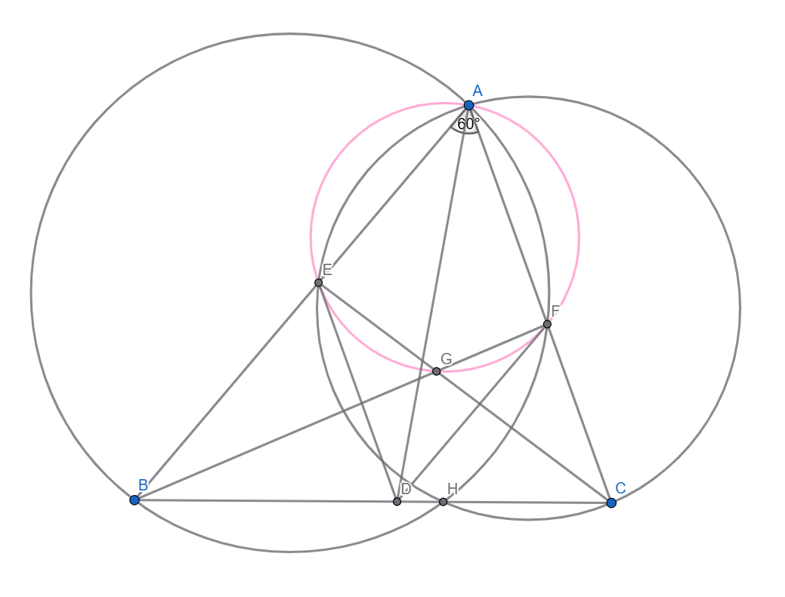
这里只有剥蒜的证法, 但是蒜量并不大, 因为题本来很简单. 如果你有纯几的做法可以告诉我哦 UwU.
看到这种题目, 可以考虑 Reversed Brocard’s Theorem (逆布洛卡定理) 判别法.
我们考虑把完全四边形的密克点做出来. 令 $BAF$ 的外接圆, $CAE$ 的外接圆分别交 $BC$ 于 $H, H’$.
则原式只需要证明 $H=H’$, 只需 $BH+CH’=BC$, 只需 $BH \times BC+CH’ \times BC=BC^2$, 即:
$BE \times BA + CF \times CA = BC^2$.
因为 $AEDF$ 是菱形, 所以我们希望把它的边长算出来. 显然 $AD$ 平分 $∠EAF$, 所以 $\frac{BD}{CD}=\frac{AB}{AC}=\frac{c}{b}$.
又 $FD // AB$, 所以 $\frac{AF}{FC}=\frac{BD}{CD}=\frac{c}{b}$, 得 $AF=\frac{bc}{b+c}$.
所以 $BE=BA-AE=c-\frac{bc}{b+c}=\frac{c^2}{b+c}, CF=CA-AF=b-\frac{bc}{b+c}=\frac{b^2}{b+c}$.
所以我们只需要验证 $\frac{c^2}{b+c} \times c + \frac{b^2}{b+c} \times b = a^2$, 即:
$\frac{b^3+c^3}{b+c}=a^2$, 即:
$a^2=b^2+c^2-bc$. 这由余弦定理及 $∠BAC=\frac{\pi}{3}$ 即证!
所以 $H=H’$, 因此 $∠AEG+∠AFG=∠AEC+∠AFB=∠AHB+∠AH’C=\pi$, 即 $AEFG$ 共圆.
证毕.
Geometry 14

Problem:
在 $△ABC$ 中, 点 $P$ 在中线 $AM$ 上. $△ABP$ 的外接圆交 $AC$ 于 $D$, $△ACP$ 的外接圆交 $AB$ 于 $E$. 令 $O$ 为 $△ADE$ 的外心.
证明: $OM ⊥ BC$.
Solution:
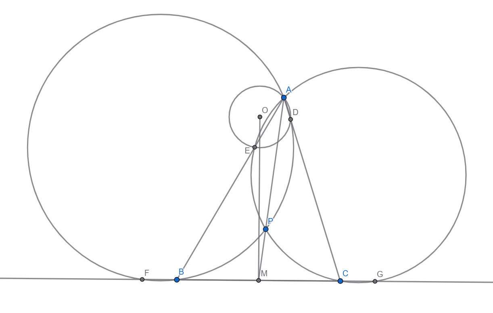
令直线 $BC$ 交 $△ABP$, $△ACP$ 于 $F, G$.
原式等价于 $B$ 到圆 $O$ 的幂等于 $C$ 到 $O$ 的幂, 即 $BE \times BA=CD \times CA$, 即:
$BC \times BG=CB \times CF$, 即等价于 $BG=CF$, 即: $MF=MG$.
而 $MF \times MB=MA \times MP=MG \times MC$, 所以 $MF=MG$.
证毕.
Geometry 15

Problem:
$ABCD$ 是圆 $O$ 的内接四边形, $AC$ 交 $BD$ 于 $P$. 过 $P$ 做任意直线, 交圆 $O$ 于 $E, F$, 交 $ABP$ 的外接圆于 $G$, 交 $ACP$ 的外接圆于 $H$.
证明: $EG=FH$.
Solution:
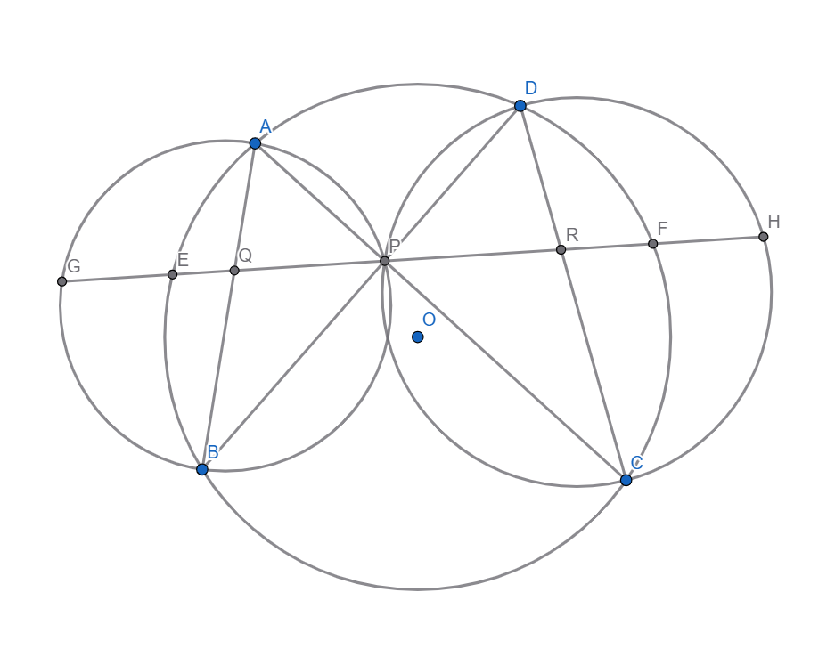
发现以 $P$ 为中心反演后就变成了类似蝴蝶定理的形状, 只不过 $P$ 是随意的.
这个形状的性质由 Candy’s Theorem (坎迪定理) 描述.
令 $AB, CD$ 分别交 $EF$ 于 $Q, R$. 则以 $P$ 为反演中心, $P$ 对圆 $O$ 的幂反演, 则:
$E, F$ 互反, $A, C$ 互反, $B, D$ 互反, 因此 $APB$ 的外接圆反演为 $CD$, $CPD$ 的外接圆反演为 $AB$.
所以, $G, R$ 互反, $H, Q$ 互反. 由反演的性质,
$GE=FR \times \frac{r^2}{PR \times PF}, FH=EQ \times \frac{r^2}{PQ \times PE}$,
其中 $r^2$ 为反演幂的绝对值. 所以, 我们只需要证明: $\frac{FR}{PR \times PF} = \frac{EQ}{PQ \times PE}$.
由 Candy’s Theorem (坎迪定理), $\frac{1}{PQ}-\frac{1}{PE}=\frac{1}{PR}-\frac{1}{PF}$,
所以 $\frac{EQ}{PQ \times PE}=\frac{FR}{PR \times PF}$, 即证.
证毕.